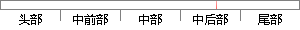

的灰度平均值，当图像处于清晰 状态下 时
片段位置图

相似结果
相似片段：
的灰度方差算子可以定义为： (2-6) 则评价函数可以定义为： (2-7) 其中f(x, y)为图像的像素点，X、Y分别表示感兴趣图像区域的行数和列数，为所有像素点的灰度平均值，当图像处于最清晰位置时，灰度方差评价函数取得最大值。 4、灰度熵函数[6][21] 成像过程是一定量的光能量在像平面上的随机分布 ,我们可以通过图像的信息熵来衡量图像的
| 对比库： | WriteCheck云资源库 |
| 来源： | www.yangsky.com 查看来源 |
| 发布时间： | 2014-01-18 |
| 相似率 | 78.57% （轻度抄袭） |